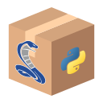

Use cases, main features and key strengths#
DataLab is a platform for data processing and visualization (signals or images) that includes many functions. Developed in Python, it benefits from the richness of the associated ecosystem in terms of scientific and technical libraries.
What are the applications for Datalab?#
Real world examples#
A few concrete and specific examples illustrate the nature of the work that can be carried out with DataLab:
Processing of experimental data (signals and images) acquired on a scientific facility in the nuclear field
Processing of data acquired by a sensor in an industrial context
Processing of images acquired by a camera in a medical context
Automatic detection of defects on a surface, in the context of quality control
Automatic detection of laser spots on a target, in the context of laser alignment
Instrument alignment through image processing
Automatic pattern detection on images and geometric correction of the images, in the context of non destructive testing
Usage modes#
Depending on the application, DataLab can be used in three different modes:
Stand-alone mode: DataLab is a full-fledged processing application that can be adapted to the client’s needs through the addition of industry-specific plugins.
 Embedded mode: DataLab is integrated into your application to provide the necessary processing and visualization features.
 Remote-controlled mode: DataLab communicates with your application,
allowing it to benefit from its functionality without disrupting
the user experience.
Remote-controlled mode: DataLab communicates with your application,
allowing it to benefit from its functionality without disrupting
the user experience.
Use cases#
See also
For practical examples of use cases, see the Tutorials section:
Most of the tutorials are describing concrete examples of use of DataLab in a scientific or technical context.
Regarding the use of DataLab with an IDE (Integrated Development Environment) such as Visual Studio Code or Spyder, see the tutorial DataLab and Spyder: a perfect match.
As for the use of DataLab with Jupyter notebooks, that is one of the topics covered in the tutorial Add your own features.
DataLab is a versatile tool that can be used in different contexts:
- Data processing
DataLab is a powerful tool for processing signals and images. It can be used to develop complex algorithms, or to quickly prototype a processing chain.
See our Tutorials for practical examples of use in data processing.
- Companion tool for scientific/technical work
DataLab can be used as a companion tool for scientific/technical work. It allows you to visualize and process data, and to share your results with your colleagues. It can easily be adapted to your needs through the addition of plugins, and it may even be used together with your every day tools (e.g., Visual Studio Code, Spyder, … or Jupyter notebooks).
See our Tutorials for practical examples of use in a scientific/technical context.
- Prototyping a data processing application
DataLab can be used to quickly prototype a data processing application. It can then be used as a basis for the development of a full-fledged application.
See the tutorial Prototyping a custom processing pipeline for a concrete example.
- Debugging a data processing application
DataLab can be used as an advanced debugging tool for your data processing applications, independently from the development environment or the language used (Python, C#, C++, …). All you need is to be able to communicate with DataLab via its remote control interface (standard XML-RPC protocol). This allows you to send data to DataLab (signals, images or even geometric shapes), visualize the data at each step of the processing chain, manipulate them to better understand the behavior of your algorithms, and even modify them to test the robustness of your code.
See the tutorial Debugging your algorithm with DataLab for a quick overview of this feature.
Note
DataLab can also be controlled from your familiar development environment (e.g., Visual Studio Code, Spyder, …) or from a Jupyter notebook, in order to perform calculations using your processing functions while leveraging the advanced features of DataLab. See the tutorials Prototyping a custom processing pipeline or DataLab and Spyder: a perfect match for examples of use.
With its user-friendly experience and versatile usage modes, DataLab enables efficient development of your data processing and visualization applications while benefiting from an industrial-grade technological platform.
Main features#
The main technical features of DataLab include:
Support for numerous standard and proprietary data formats
Opening an arbitrary number of objects (signals or images) for batch processing, with the possibility of defining groups of objects
Simultaneous viewing of multiple objects with annotation support
Standard operations and processing on signals and images
Advanced image processing (restoration, morphology, edge detection, etc.)
Management of multiple regions of interest (calculations, extractions)
Macro-command editor
Remote-controllable API
Embedded interactive Python console
Key strengths#
To summarize, the four key strengths of DataLab are:
- Extensibility
The DataLab plugin system makes it easy to code new features (specific processing, specific file formats, custom graphical interfaces). It can also be used as a customizable platform.
- Interoperability
DataLab can also be embedded in your own application. For example, within data processing software, machine-level control systems, or test bench applications.
- Automation
A high-level public API allows for full remote control of DataLab to open and process data.
- Maintainability and testability
DataLab is an industrial-grade scientific and technical processing software. The built-in automated tests in DataLab cover 90% of its features, which is significant for software with graphical interfaces and helps mitigate regression risks. Moreover, the test suite includes validation tests based either on ground truth data or analytical solutions.
See also
See section Validation for more information on DataLab’s validation strategy.